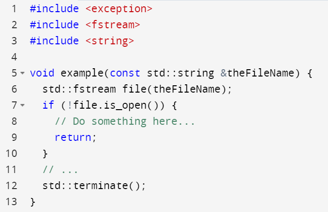
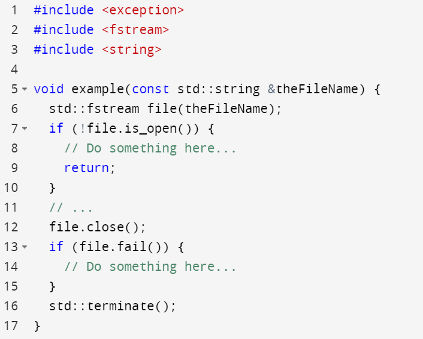
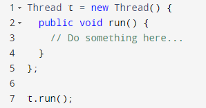
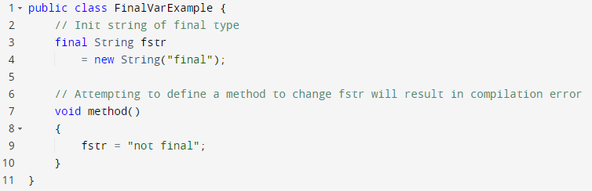
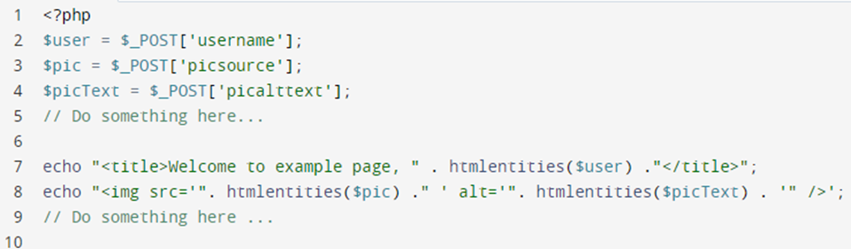
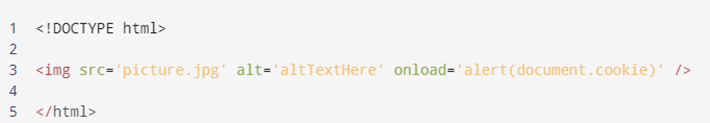
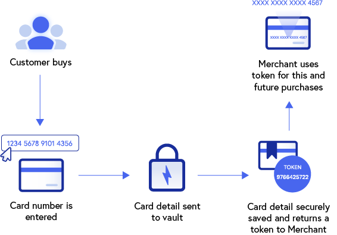
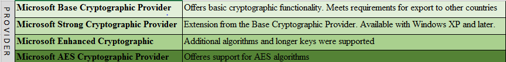
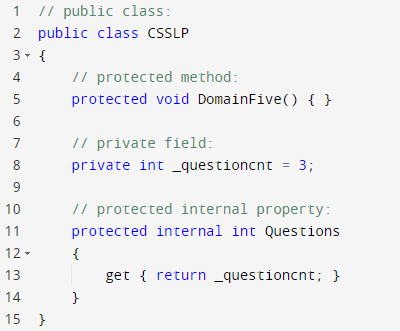

Software producing organizations should establish and enforce
secure coding standards. Various guidelines and checklists for secure coding
practices have been developed and published. In addition to security considerations,
coding standards ensure code uniformity and maintainability, which also supports
security throughout a software system's life cycle.
Objectives
Identify the features of secure coding standards.
Describe different approaches for implementing security in managed applications.
Identify common flaws in software and corresponding mitigation strategies.
Explain common secure coding practices.
Identify methods of data protection in transit and at rest.
Overview
Secure coding practices when adopted and enforced result in the
construction of more cyber-resilient software. These considerations are often
incorporated into various stages of software development to ensure early and
frequent verification of security, implementation of proper input validation and
encoding, robust authentication and access controls, error and exception management,
protection of data in transit and at rest, logging, and managing third-party code
and libraries.
Secure Coding Standards and
Practices
Well-documented and enforceable coding standards are essential
to secure software development. Coding standards encourage programmers to follow a
uniform set of rules and guidelines determined by the requirements of the project
and organization, not by the programmer’s familiarity or preference. Once
established, these standards can be used as a metric to evaluate source code (using
manual or automated processes) for compliance with the standard.1
Today there are a plethora of secure coding standards and
practices originating from many organizations including industry giants,
international standards groups, and nonprofits. One example is the Carnegie Mellon
University (CMU) Software Engineering Institute (SEI) Computer Emergency Response
Team (CERT), which publishes guidance for secure coding best practices. SEI CERT
also publishes generic Top 10 Secure Coding Practices guidance, enumerated below.
Validate input.
Heed compiler warnings.
Architect and design for security policies.
Keep it simple.
Default deny.
Adhere to the principle of least privilege.
Sanitize data sent to other systems.
Practice defense in depth.
Use effective quality assurance techniques.
Adopt a secure coding standard.2
Additionally, secure coding standards can be more specific and
focused on a particular programming language. For example, SEI CERT produces the
following coding standards for specific languages:
SEI CERT C Coding Standard
SEI CERT C++ Coding Standard
SEI CERT Perl Coding Standard
SEI CERT Oracle Coding Standard for Java
Android Secure Coding Standard
Secure Coding Standards in
Action
One programming rule from SEI CERT C++ Coding Standard is
FIO51-CPP (i.e., close when no longer needed). If files are not properly closed
after usage, adversaries may be able to exhaust the hosting system’s underlining
resources which may result in data confidentiality issues pending memory handling
during an application abnormal termination. The SEI standard informs noncompliant
and compliant solutions.
In this example, the standard handler std::abort() is
called, which results in std::basic_filebuf<T> object persisting
because a destructor was not called.

Figure 1: Noncompliant C++ Source Code
Compliant C++ Source Code
The solution below is improved because std::fstream::close()
is executed prior to std::terminate(), which ensures proper resource
management. Not pictured the stream could also be closed implicitly using Resource
acquisition is initialization (RAII), which would have the same effect.

Figure 2: Compliant C++ Source Code
Declarative vs. Imperative
(Programmatic) Security
Most programming languages and development environments support
both declarative and imperative security (e.g., .NET, J2EE). Declarative security
specifies application security using configuration or annotation. An example of
declarative, or “external,” includes J2EE security descriptors that include
considerations for access control and authentication. Changes to declarative
security do not require software development efforts. The hosted instance of the
application server typically handles security enforcement.
Alternatively, programmatic security refers to security
integrated into application code. Programmatic security may supplement when
declarative mechanisms alone are not adequate for application business needs.
Programmatic security is more difficult to change since it is embedded in an
application. This level of integration and inflexibility also bolsters security
configuration integrity.
Concurrency
Concurrency-related issues exhibited in software led to quality
issues and vulnerabilities whose exploitations resulted in elevation of privileges
and denial of service, among other possibilities. Synchronization that is incorrect,
or missing altogether, can lead to a weakness in software that utilizes a shared
resource in a concurrent manner but fails to synchronize access to the resource.
CWE-557—Concurrency Issues is a CWE category that includes
weaknesses related to shared resources and concurrent usage. Included in this
category are:
CWE-386—Symbolic Name not Mapping to Correct Object
CWE-421—Race Condition During Access to Alternate Channel
CWE-663—Use of a Non-reentrant Function in a Concurrent Context
CWE-820—Missing Synchronization
CWE-821—Incorrect Synchronization
CWE-1058—Invokable Control Element in Multi-Thread Context with non-Final Static
Storable or Member Element
CWE-1322—Use of Blocking Code in Single-threaded, Nonblocking Context
One example of CWE-821—Incorrect Synchronization includes
variant CWE-572—Call to Thread run() instead of start(). Typically, a call to a
thread object run() method is a programming error. The developer that erroneously
executes this most certainly intended to start a new thread but instead caused a
defect calling run() instead of start(). When this occurs, run() will execute in the
caller's context. This is illustrated in the following Java excerpt that produces an
incorrect synchronization defect.

Figure 3: CWE-821—Incorrect Synchronization
Race Conditions
According to CWE-362, concurrent executions using shared
resources with improper synchronization are known as “race conditions.”
The program contains a code sequence that can run concurrently
with other code, and the code sequence requires temporary, exclusive access to a
shared resource, but a timing window exists in which the shared resource can be
modified by another code sequence that is operating concurrently. This architecture
can have security implications when the expected synchronization is in
security-critical code, such as recording whether a user is authenticated or
modifying important state information that should not be influenced by an outsider.
A race condition violates the following closely related properties:
Exclusivity. The code sequence is given exclusive access to the shared
resource, i.e., no other code sequence can modify properties of the shared
resource before the original sequence has completed execution.
Atomicity. The code sequence is behaviorally atomic, i.e., no other
thread or process can concurrently execute the same sequence of instructions (or
a subset) against the same resource.3
Sequencing and timing issues in the software can cause what is
commonly known as Time-of-Check/Time-of-Use (TOC/TOU) or race condition attacks.
A TOCTOU (time-of-check, time-of-use) race condition is possible
when two or more concurrent processes are operating on a shared file system.
Typically, the first access is a check to verify some attribute of the file,
followed by a call to use the file. An attacker can alter the file between the two
accesses or replace the file with a symbolic or hard link to a different file. These
TOCTOU conditions can be exploited when a program performs two or more file
operations on the same file name or path name. A program that performs two or more
file operations on a single file name or path name creates a race window between the
two file operations. This race window comes from the assumption that the file name
or path name refers to the same resource both times. If an attacker can modify the
file, remove it, or replace it with a different file, then this assumption will not
hold.4
Many Unix/Linux-based products (e.g., operating systems, web
servers) have exhibited race condition vulnerabilities.
At a high-level, all software security practitioners should
understand that three conditions must be satisfied for a race condition to exist:
Concurrency property. Two or more control flows execute concurrently.
Shared object property. The concurrent flows must access the shared
race object.
Change state property. One or more control flows must alter the race
object state
Potential solutions for race conditions include:
Race windows. Elimination of race conditions begins with identifying
race windows. A race window is a code segment that accesses the race object in a
way that opens a window of opportunity during which other concurrent flows could
“race in” and alter the race object.
Mutual exclusion (Mutex). Race conditions are eliminated by making
conflicting race windows mutually exclusive. Once a potential race window begins
execution, no conflicting race window can be allowed to execute until the first
race window has completed. Race windows are referred to as critical sections
because it is critical that the two conflicting race windows don’t overlap
execution. Treating each critical section as an atomic unit with respect to
conflicting race windows is called mutual exclusion.
3 Common Weakness Enumeration (CWE): A
Community-Developed List of Software and Hardware Weakness Types; CWE-362:
Concurrent Execution using Shared Resource with Improper Synchronization (‘Race
Condition’); https://cwe.mitre.org/data/definitions/362.html; retrieved
July 2023.
In multithreaded environments, implementations must assre that
accessing the same resource by various threads does not expose erroneous behavior or
produce unpredictable results. This concept is referred to as thread safety. This is
important when the code depends on a certain order of execution for correct
behavior.
Thread Safety in Action
Multithreading, processing using multiple threads concurrently,
is handled differently within different programming languages and frameworks. Using
Java as an example, there are at least four ways to support thread safety while
performing concurrent execution. Examples include Synchronization, invoking the
volatile keyword, utilizing the final keyword, and the atomic variable. Java final
variables are thread safe because reassignment of a reference object is not
possible.

Figure 4: Thread Safety
Database Concurrency Controls
Simultaneous execution of transactions in a multiuser database
requires concurrency controls; without them data integrity and consistency problems
such as lost updates can arise. In other words, database concurrency controls are
used to coordinate simultaneous transactions on the database while preserving the
integrity of data. Various concurrency control algorithms (e.g., lock-based) are
used for this purpose.
Input Validation
Input validation is one of the most fundamental and most
critical mitigation strategies relevant to most common web application
vulnerabilities (e.g., injection vulnerability, buffer overflow vulnerability).
Input validation represents protection at the perimeters of an application and
should be considered a key layer of defense in a defense-in-depth strategy. Often
input validation is associated with user interfaces but software security
practitioners understand that integration points between software systems where data
flows between systems should also be restricted and validated.
An important question to answer when developing secure code is
to determine where to perform input validation. It is recommended that input
validation be performed both on the server side (backend) as well as on the client
side (frontend). At a bare minimum, input validation must be performed on the
backend. It should never be performed only on the client side (frontend).
Client-side validation should be used only from a user experience standpoint and
never for implementing security in your software. Client-side validation can be
easily bypassed; for this reason, it must never be trusted to provide adequate
levels of security.
Software, especially internet-centric, adheres to Postel’s Law:
“Be conservative in what you do, be liberal in what you accept from others.” Liberal
acceptance of inputs increases user and technology interoperability at the expense
of increased cyber-attack surfaces. This architectural idea has resulted in the
interconnectivity of the internet today. Security practitioners should take a
slightly different stance than Postel to ensure business continuity is maintained
and software risks are managed. A simple stance for defensively architecting
applications might include:
All input data is evil and must be sanitized.
Data must be accepted for interoperability but there is no trust without
verification.
Filtering
Filtering is a form of validation. There are often known good
inputs (i.e., inputs the developer is completely certain are safe). There are also
known bad characters (i.e., inputs the developer is certain are unsafe). Based on
this, there are two approaches to managing input:
Allow list. An allow list, formerly called a whitelist, is a list of
“known good inputs.” It is basically a list that says, “A, B, and C are good
(and everything else is bad).” This is a good practice to prevent malicious
input into the application.
Block list. A block list, formerly called a blacklist, is a list of
“known bad inputs.” It is basically a list that says, “A, B, and C are bad (and
everything else is good).”
Deny-list validation should be avoided in most cases, as it
could be relatively trivial for an attacker to bypass such filters. For input fields
provided by a user, allow-list validation is appropriate.
Canonicalization
Canonicalization refers to multiple (alternate) representations
of a name. Equivalent forms of a name resolve to a same standard name (canonical
name). When determining requirements for secure software code, it is important to
identify the alternate representations and design the software so that the
validation decisions are not based upon any one method of a file or device name.
Regardless of the development platform, always transform the file name or Uniform
Resource Locator (URL) into a canonical version to ensure that the different
variations of a file name or URLs equate properly.
Output Sanitization
Improper encoding or escaping can allow attackers to change the
commands sent to another component, inserting malicious commands instead. Output
sanitization means sanitizing the data you may already have and securing it prior to
rendering it for the end user. This is done by converting untrusted input into a
safe form where the input is displayed as data to the user without executing as
code. Output sanitization is also known as output encoding.
One way of performing output encoding is to use an Extensible
Stylesheet Language (XSL) engine, which can convert the output to a different
encoding. When the document is loaded into memory, XML applications such as XSL
Transformation (XSLT) engines convert it to Unicode. The XSL engine then uses the
stylesheet templates to create a transformed version of the content in memory
structures. When it is done, it serializes the internal content into a stream of
bytes that it feeds to the outside world. During the serialization process, it can
convert the internal Unicode to some other encoding for the output.
Output Sanitization Issues in
Action
Output sanitization issues may arise when downstream software
uses an encoded input, but the data does not match what was intended. For example,
HTML supports entity encoding for HTML body elements on a website. A programmer may
encode output as an attribute that contains functional JavaScript. The following
HTML example focuses on the web-based software, but this weakness applies to any
software data flows that support multiple encodings.

Figure 5: Output sanitization
The programmer attempts to obfuscate output streams by encoding
HTTP POST values so HTML will not translate but htmlentities() encoding
will not be sufficient when the data being encoded is HTML because more attributes
may be inserted. picText could be altered as shown below:
This could result in an adversary injecting malicious JavaScript
into an attribute due to inadequate encoding. As shown below, we can see the
rendered image object contains the added onload scripting.

Error and Exception Handling
Exceptions are run-time anomalies. Here are a few possible
examples:
Attempted to establish connection, but the server does not respond.
Tried to connect to the database, but connections cannot be established.
Attempted to open a file for reading, but the file does not exist.
Error and exception handling are a part of the overall security
of software. Proper error and exception handling must resolve anomalies, faults, and
errors in ways that do not leave the software, its resources, data, or environment
in a vulnerable state. All exceptions must be explicitly handled. Best practices
have been developed for various programming environments. A few examples of commonly
agreed-upon best practices in this regard include:
Not ignoring exceptions
Leaning toward catching specific exceptions
Having a catch-all exception block
Cleaning up resources in a final block
It is important to understand that verbose exception/error
messages are one source of information leakage about the software, including the
logic of the code or schema of the database. Leaked information may be used for
launching focused attacks (e.g., SQL Injection). Verbose error messages should be
avoided, and generic responses must be returned.
Secure Logging and Auditing
Logging and auditing are distinct but interrelated topics. NIST
defines a as a record of the events occurring
within an organization’s systems and networks. NIST defines an as the independent review and
examination of records and activities to assess the adequacy of system controls and
ensure compliance with established policies and operational procedures. Logging
describes who, what, when, where, and how to capture information to be reviewed at a
later date. Auditing describes who, what, when, where, and how to review the
captured log data.
Log files in general can show discrete events within an
application or system, such as those that pertain to failure, error, or state
transformation. It is important to recognize that logs are not meant to solely serve
the purpose of troubleshooting software by developers and that there may be many
stakeholders interested in events and logs, including security personnel and
auditors.
The types of information contained in each log will depend on
the nature of the log in question. Establishing audit trails requires, at minimum,
the capture of “who,” “what,” “when,” and “where” in logs. When capturing the time
(“when”), use a consistent timestamp.
Audit trails need to capture enough evidence to help in an
investigative process. Among the factors should be when the event took place, who
caused the event (e.g., user ID), what triggered the event (e.g., program, command),
and date and time, which will help determine whether the user was who they should
have been or a masquerading intruder.
Security practitioners must also be concerned with maintaining
logs while considering confidentiality and integrity concerns. To maintain
integrity, logs hashes may be implemented, or logs may be stored on write once, read
many (WORM) drives where, as the name suggests, data written to the medium cannot be
erased or modified. From a confidentiality perspective, log access should be limited
based on need-to-know. Sometimes logs may contain sensitive data to which an auditor
should not have undue access. In this case, user data could be sanitized or masked
before storage for compliance considerations.
Session Management
Given the stateless nature of HTTP protocol, and the fact that
each request/response pair is independent of other web interactions, web
applications require the implementation of session management capabilities to retain
information about application users for the duration of their sessions.
Session management practices are especially important in the
context of authenticated sessions, when the session ID is used by the web
application for the purpose of enforcing access control.
Improper session management that leads to disclosure,
prediction, capture or brute forcing the session IDs presents an opportunity for the
exploitation of vulnerabilities by adversaries. Hijacking a session and
impersonating a victim in the web application can have severe consequences.
In general, technology-specific web development frameworks such
as .NET, PHP, and Java (among others) offer built-in session management
capabilities. The built-in approach is preferred over custom (developed in-house)
session management implementations, but even these frameworks may not be free of
vulnerabilities.
If using cookies for session management, always follow the best
practices and ensure the protection of the cookies with cryptographic mechanisms or
other appropriate safeguards. For example, enforce that cookies can only be
transmitted over a secure HTTPS connection.
Safe Application Programming
Interfaces (APIs)
Services of software can be made available through a set of
application programming interfaces (APIs). Think of them as a set of interfaces
where software services can be requested. Examples of APIs include:
APIs from the standard library of a programming language
APIs from third-party libraries to perform cryptographic operations
APIs to access and process data in a database
APIs available through the operating system for kernel services
Web APIs to receive real-time traffic information from some provider
APIs to send a message or receive a message securely
In summary, APIs are used to communicate with other software
layers, products, and services.
Libraries provide the implementations in terms of functions and
procedures, and for the API users, they are a set of specifications for invocation
without the knowledge of how the APIs are implemented. Of special importance to the
CSSLP is the safety and security of these APIs.
Software developers must make efforts to avoid using unsafe
APIs. One example of unsafe APIs is the various string manipulation functions from
the standard library of C/C++, where the improper usage of these functions could
result in buffer overflows. Most static analyzers can detect the usage of unsafe
APIs.
Security of APIs in general, and web APIs specifically, must be
assured, whether you own them or you use them. A discussion of the security of web
APIs is outside the scope of this domain; however, note that the same security
principles that have been discussed so far (e.g., least privilege, separation of
concerns, defense in depth) are relevant to the security of web services.
Type Safety
Type safety refers to the ability of a programming language to
prevent type errors. A type error is incorrect or undesirable program behavior
caused by a discrepancy between different data types and includes considerations for
constants, variables, methods, and functions. Type enforcement can be static,
catching potential errors at compile time; dynamic, associating type information
with values at runtime, and consulting them as needed to detect imminent errors, or
a combination of both.
The behaviors classified as type errors by a given programming
language are usually those that result from attempts to perform operations on values
that are not of the appropriate data type.
From a security perspective, type safety is desirable. C and C++
are type unsafe, whereas other languages, such as .NET, Ada, and Java, are
considered type safe. There are also special-purpose programming languages like Ada,
designed to be type and memory safe to support the development of critical software
systems such as embedded systems on aircraft. Software security practitioners should
understand the tradeoffs between commonly adopted languages and special case
languages. For instance, Ada is more compliant with the requirements for critical
infrastructure than C++ by default but where will you find competent Ada
programmers? At the time of this writing there are millions of C++ developers
compared to a much smaller unknown quantity utilizing Ada.
Memory Management
Memory represents one of the most critical resources of a
computer system. Improper memory management practices can lead to serious stability
and security-relevant issues. Memory leaks associated mostly with unmanaged
programming environments (e.g., C/C++) are common, yet not easy to trace back to the
source of the problem to fix.
Depending on the nature of the problem, memory leaks may be
negligible with little (if any) noticeable effect, or significant enough that they
lead to an eventual exhaustion of the resource and abnormal system behavior. Leaks
associated with kernel processes can be particularly problematic and may result in
significant stability issues and deterioration of system performance.
This issue in more general terms is covered by Common Weakness
Enumeration (CWE), as Uncontrolled Resource Consumption: “The software does not
properly control the allocation and maintenance of a limited resource thereby
enabling an actor to influence the amount of resources consumed, eventually leading
to the exhaustion of available resources.”5
Rust programming language has been presented as an alternative
to C++. It uses a similar syntax and may offer increased memory safety and other
advantages.
Automatic Memory Management and
Destruction of Unneeded Objects
Code written for managed programming languages, such as .NET and
Java, can benefit from garbage collection facilities. These languages provide a
generalized way to handle the details of memory management and garbage collection.
Garbage collection facilitates the destruction of instantiated dangling objects in
memory that have gone out of scope but are not explicitly destroyed (closed), at the
cost of a small amount of overhead. This tradeoff frees developers from various
error-prone memory management tasks.
The main benefit of garbage collection is that it frees the
programmer from some memory management tasks. However, garbage collection has
potential disadvantages, including:
Tokenization replaces sensitive data with a unique nonsensitive
substitute (i.e., token) that retains data without compromising its security.
Tokenization focuses on minimizing data storage for essential information that
positively impacts data security, especially for credit card transactions.
Tokenization also aids in compliance with PCI-DSS and other applicable government
considerations. The figure below demonstrates how tokenization might abstract credit
card information during a transaction.

Figure 6: Tokenization
The PCI Security Standards Council produced Tokenization
Product Security Guidelines that define standards for reversible and
irreversible tokens within the payment card industry. Irreversible tokens cannot be
converted back to the original payment information. Reversible tokens afford the
ability to convert the token back into payment information. Continuing the example
of tokens in the payment card industry, PCI describes four security domains that
include token generation, token mapping, card data vaulting, and key management. The
following table aids the selection of tokens based on the PCI-defined security
domains.
Isolation, as presented earlier in the course, is the idea of
keeping a virtual machine separate from its physical host system and from other
virtual machines. Both virtualization and containers are different types of
isolation discussed in previous domains. Below, we discuss sandboxing, another form
of isolation.
Sandboxing
Sandboxed environments are primarily about isolation and the
security benefits that come with it. Technologies may be used to create an isolated
and safe execution environment, and to contain the possible damage and impact of
misbehaving code.
A sandbox typically provides a tightly controlled set of
resources for guest programs to run in, such as scratch space on disk and memory.
Network access and the ability to inspect the host system or read from input devices
are usually disallowed or heavily restricted. A Java applet run in a browser is an
example of a sandbox. An applet like this is a representation of mobile code—code
downloaded from a remote server, executing on the client. This applet may not be
allowed to perform some operations or to have access to certain resources.
Separation Kernel Protection
Profile
A Separation Kernel Protection Profile (SKPP) basically provides
the specification of security requirements for the purpose of evaluating “separation
kernels.” To understand this concept better and recognize its relation to the
security concept of isolation, both Separation Kernels and Protection Profiles must
be understood.
Understanding Separation Kernel
The concept of separation kernel was first introduced by John
Rushby in his paper titled “Design and Verification of Secure Systems.”
Rushby’s central idea was that from a security perspective,
separation (e.g., the function implemented by a hypervisor to separate virtual
machines) is such a critical operation that it should not be handled by a
large/complex operating system that has a multiplicity of responsibilities.
A separation kernel, solely focused on the separation task, is
created by factoring out the separation function from the operating system,
resulting in a kernel that can be verified for correctness due to its simplicity.
Initial use case for separation kernel was its application to
high-security systems responsible for the separation of Department of Defense and
government top-secret, secret, and confidential information classifications.
A separation kernel is a special type of bare metal hypervisor
that only does separation. More specifically, it is a tiny piece of carefully
crafted code (as small as 15KB) that utilizes modern hardware virtualization
features to 1) define fixed virtual machines (VMs) and 2) control information
flows.6
A minimal implementation of a separation kernel involves
eliminating as many things as possible (e.g., device drivers, user model, shell
access). Any such kernel architecture, although not best suited for desktop use, may
be appropriate for embedded real-time or safety-critical systems.
The Common Criteria (CC), also known as ISO/IEC 15408, were
developed through a combined effort of six countries: the United States, Canada,
France, Germany, The Netherlands, and the United Kingdom. This effort built on
earlier standards, including Europe’s Information Technology Security Evaluation
Criteria (ITSEC), the United States’ Trusted Computer System Evaluation Criteria
(TCSEC), and the Canadian Trusted Computer Product Evaluation Criteria (CTCPEC).
This international standard for computer security allows an objective evaluation to
validate that a product satisfies a defined set of security requirements.
Product evaluation per CC involves the selection of a Protection
Profile (PP), an implementation-independent set of security requirements.
Cryptography
As discussed earlier, cryptography is a method of storing and
transmitting data in a form so that only those for whom it is intended can read and
process it. Cryptography is most often associated with scrambling plaintext into
cipher text through the process of encryption and the reverse: unscrambling from
cipher text back to plaintext through the process of decryption.
Modern cryptography concerns itself with the following
objectives:
Confidentiality (the information cannot be understood by anyone for whom it was
not intended)
Integrity (the information cannot be altered in storage or transit between
sender and intended receiver without the alteration being detected)
Nonrepudiation (the creator/sender of the information cannot deny at a later
stage their intentions in the creation or transmission of the information)
Understand that symmetric algorithms may only be used to address
the confidentiality requirement, whereas asymmetric algorithms have other use cases
as well. Further, application developers must ensure that they are using the latest
standards (e.g., TLS 1.2 and AES 256 are current as of this writing), as they are
subject to change. The word standard implies the usage of vetted solutions and
avoidance of custom cryptography where and when possible. Note that encryption may
be considered a dual-use good (having both commercial and military applications),
and that it may be subject to export restrictions, depending upon certain criteria.
Cryptography vs. Encryption
The terms encryption and cryptography are often used
interchangeably, but a distinction must be made between them. If cryptography is a
science, then encryption refers to one component of that science. Remember the
basics of how symmetric and asymmetric algorithms work. Below is a refresher
summary:
Symmetric algorithms are relatively fast (as compared to asymmetric ones) and
require a smaller resource investment, but present key management challenges, as
the same key that is used to encrypt a message will also be needed to decrypt
it. This key must remain private and in possession only of the parties
involved. Good examples of symmetric algorithms include DES (which is considered
broken) and AES (standard at the time of this writing).
Asymmetric algorithms rely on a pair of keys: one that is private (known only to
the owner) and one that is public (assumed that everyone could have knowledge of
it). To achieve confidentiality, a message is encrypted using the public key of
the recipient, so that only the recipient can decrypt the message. Good examples
of asymmetric algorithms include Diffie-Hellman (for historical reasons) and RSA
(current). Public key cryptography relies on the Public Key Infrastructure
(PKI), which consists of several components including Certificate Authority
(CA), Registration Authority (RA) and digital certificates.
A more practical usage would involve a hybrid of symmetric and
asymmetric algorithms. In such a hybrid usage, a symmetric algorithm is used to
encrypt the message, and the key used to perform the encryption is asymmetrically
exchanged with the other party.
Payload Encryption
Performing end-to-end payload encryption goes beyond the
protection afforded by technologies such as TLS. Protection against unauthorized
disclosure during the transmission of sensitive data between endpoints may require
the encryption/decryption of the message at both ends of the communication. When
used correctly, end-to-end encryption offers protection of message content (e.g.,
text messages, voice calls, video calls) in transit.
Field-Level Encryption
While encryption of the entire database can help achieve certain
objectives, field-level encryption also has its use cases. When supported, it can be
used to provide an additional layer of security for specific data throughout
processing by enabling encryption on fields/columns that contain sensitive data.
Storage Encryption
For data at rest, encryption requirements of a typical
enterprise can be met through a combination of approaches utilizing various tools
and technologies for full disk, virtual disk, volume, database, file and folder,
application, and other types of encryption—each with its own benefits and
limitations. In this context, encryption represents a primary technical control for
protection of the information assets, so it must be used when and where it is
required (i.e., by laws and regulations) or justified (i.e., from a business
perspective).
Full Disk Encryption
Full disk encryption (FDE), also known as whole disk encryption,
is the process of encrypting all the data on the hard drive used to boot a computer,
including the computer’s OS, and permitting access to the data only after successful
authentication to the FDE product.
Virtual Disk Encryption and Volume
Encryption
Virtual disk encryption is the process of encrypting a file
called a container, which can hold many files and folders, and permitting access to
the data within the container only after proper authentication is provided, at which
point the container is typically mounted as a virtual disk. Virtual disk encryption
is used on all types of end-user device storage. The container is a single file that
resides within a logical volume. Examples of volumes are boot, system, and data
volumes on a personal computer, and a USB flash drive formatted with a single file
system. Volume encryption is the process of encrypting an entire logical volume and
permitting access to the data on the volume only after proper authentication is
provided. Volume encryption is most often performed on hard drive data volumes and
volume-based removable media, such as USB flash drives and external hard
drives.7
Cryptographic agility is the capacity for a software system to
easily evolve and adopt alternatives to the cryptographic primitives it was
originally designed to use. The X.509 certificate format is an example of
cryptographic agility, supporting various hash algorithms, signature algorithms, key
sizes to address future needs. Cryptographic agility is a common theme during the
architecture and design of cryptographic libraries, APIs, and frameworks, including
those found in .NET and Java. When new vulnerabilities are found or algorithms are
broken, switching to new crypto providers should not put a significant burden on the
software development team. Cryptographic agility could lead to complexities and
potential vulnerabilities if not implemented correctly. This may be considered a
disadvantage.
Algorithm Selection
Software developers are encouraged to use vetted standards and
avoid custom cryptography. Avoid weak algorithms when possible, as they may provide
a false sense of security. Understand that the field is rapidly changing, and when
evaluating algorithm choices, both the algorithm and the key size should be
considered. Remember that Data Encryption Standard (DES), which was once considered
government standard, was broken much more quickly than anticipated due to inadequate
key length, which made a brute force attempt possible. Follow the best practices,
adopting symmetric algorithms, asymmetric algorithms, hash functions, etc. For
example, best practices may recommend the use of SHA 256 or better, which implies
that the use of the MD series of hash functions should be avoided.
Cryptographic Libraries
Software developers frequently rely on cryptographic libraries
and APIs for cryptographic services and functions. Examples of this include
symmetric block ciphers, Microsoft Cryptography API (CryptoAPI), which is now
replaced by Cryptography API Next Generation (CNG), and Java cryptography libraries
and packages.
Software developers must make sure to use the right
cryptographic libraries and services to achieve the intended security objectives.
This table shows a partial list of cryptographic providers
available to developers.

Table 8: Examples of Microsoft Cryptographic Service
Providers
Cryptography as Dual-Use
Technology
Cryptography is considered a dual-use good. As such, the export
of cryptographic technologies may be subject to restrictions.
The Bureau of Industry and Security (BIS) of the U.S. Department
of Commerce is responsible for regulating the export of most commercial items, often
referred to as “dual-use” items—those having both commercial and military or
proliferation applications.8
Access Control
A key component of security is access control. Various access
control models were discussed in previous domains, and role-based access control
(RBAC) was described as a valuable approach. Also relevant to access control are the
topics of trust zones and permissions.
Trust Zones
The concept of trust zones has existed in various realms of
security, including network security, physical security, and software security where
each zone is associated with a certain security and trust level.
Examples:
By controlling the flow of traffic between networks and hosts, firewalls enable
organizations to create various security zones supporting various security
postures in each zone.
As part of software threat modeling, developers identify the boundary where the
level of trust in code or data in a system or between subsystems changes.
Applying the concept of zones of trust requires the
understanding of the value of the assets that are to be protected in each zone.
Zero Trust Architecture
The modern zero-trust model deviates from the traditional focus
on perimeter defenses.
According to NIST, Zero-Trust Architecture (ZTA) provides a
collection of concepts, ideas, and component relationships (architectures) designed
to eliminate the uncertainty in enforcing accurate access decisions in information
systems and services.9
To lessen uncertainties (as they cannot be eliminated), the
focus is on authentication, authorization, and shrinking implied trust zones while
minimizing temporal delays in network authentication mechanisms. Access rules are
restricted to least privilege and made as granular as possible.
The concept of least privilege where each entity is granted the
minimum system resources and authorizations that the entity needs to perform its
function is often applied to user roles and job functions—essentially at the
network, node, or application level. However, least privilege should also be applied
to software design and implementation. Many object-oriented software development
frameworks and languages support accessibility levels on most objects including
classes, functions, methods, and variables. Security practitioners should be aware
that sometimes access modifiers are erroneously simplified to the phrasing “function
permissions.”
For an example of access modifiers, Microsoft C# supports
accessibility concepts for all types and all type members. Similar capabilities
exist with most database technologies when dealing with procedures and tables. The
C# scheme shown below is representative of a typical object access modifier
structure ordered from most to least permissive.
Public. Can be accessed by any other code in the same DLL or by
reference in another DLL.
Private. Can be accessed only by code in the same class or structure.
Protected. Can be accessed only by code in the same or derived class.
Internal. Can be accessed by any code in the same DLL.
Protected Internal. Can be accessed by any code in the declaration DLL
or from a derived class in another DLL.
Private Protected. Can be accessed by types derived from the class that
are declared within its containing DLL.
The following snippet shows various access modifiers within a C#
application in a CSSLP class.

Figure 8: Access Modifiers in C#
Processor Microarchitecture Security
Extensions
As hardware and software have evolved over the decades since
computers were invented, the discovery of many new vulnerabilities has been
witnessed. Although software seems to possess the lion’s share of
identified/researched vulnerabilities, as evidenced by the frequency and number of
released patches, hardware vulnerabilities should not be forgotten or
underestimated.
Vulnerabilities in hardware may also be exploited to gain access
to sensitive data. Ultimately, all operations on a computer are dependent on
hardware at the lowest levels. Attacks targeting hardware can be divided into two
broad categories: those that intend to exploit hardware features to bypass security
checks of the operating system, and those that attempt to directly exploit the
hardware architecture itself. To understand the gravity of the situation, imagine a
scenario where a process executes itself at ring 0 (most privileged), independent of
the operating system, with no checks and balances, exploiting the architecture to
allocate memory and deploying payloads, all with no supervision or interference of
the OS.
Spectre and Meltdown
In 2017, multiple teams of security researchers independently
discovered a new class of hardware vulnerabilities in a broad set of microprocessors
found in personal computers, servers, tablets, and phones. These vulnerabilities,
which became known as Spectre and Meltdown, took advantage of a performance
optimization technique found in these microprocessors to allow an attacker to bypass
security mechanisms protecting data stored in computer systems. The implications of
this vulnerability were severe: it could allow theft of credentials and
cryptographic keys, or exfiltration of sensitive data. Mitigating the risk of these
vulnerabilities required efforts at multiple levels, including patches in firmware
and microcode, updates to operating systems, and modifications in
applications.10
Different approaches to hardware-assisted Trusted Execution
Environment (TEE) include Intel’s Software Guard Extensions (SGX) and AMD’s Secure
Memory Encryption (SME).
Software Guard Extensions (SGX)
Intel Software Guard Extensions (SGX) is a set of instructions
that increases the security of application code and data. Developers can partition
security-sensitive code and data into an SGX enclave, which is executed in a CPU
protected region. The developer creates and runs SGX enclaves on server platforms
where only the CPU is trusted to provide attestations and protected execution
environments for enclave code and data.11
11 Michael Bartock, Ryan Savino, Murugiah Souppaya,
et. al; National Institute of Standards and Technology; NIST IR 8320—
Hardware-Enabled Security: Enabling a Layered Approach to Platform Security for
Cloud and Edge Computing Use Cases; https://nvlpubs.nist.gov/nistpubs/ir/2022/NIST.IR.8320.pdf;
retrieved July 2023.
Secure Memory Encryption (SME) and
Secure Encrypted Virtualization (SEV)
Security components found in some AMD processors provide
hardware-accelerated memory encryption for data in use. AMD Secure Memory Encryption
(SME) uses a single key to encrypt system memory. The key is generated by the AMD
Secure Processor at boot. Memory encryption is transparent and can be run with any
operating system.
SME is a general-purpose mechanism that is flexible, integrated
into the CPU architecture, scalable from embedded to high-end server workloads, and
requires no application software modifications. Main memory encryption can be
utilized to protect a system against a variety of attacks. While data is typically
encrypted today when stored on disk, it is stored in DRAM in the clear. This can
leave the data vulnerable to snooping by unauthorized administrators or software or
by hardware probing.
SEV uses one key per virtual machine to isolate guests and the
hypervisor from one another. The keys are managed by the AMD Secure Processor. SEV
requires enablement in the guest operating system and hypervisor. The guest changes
allow the VM to indicate which pages in memory should be encrypted. The hypervisor
changes use hardware virtualization instructions and communication with the AMD
Secure processor to manage the appropriate keys in the memory
controller.12
Secure Coding Best Practices (5.1)
Software producing organizations should establish and enforce secure coding standards. Various guidelines and checklists for secure coding practices have been developed and published. In addition to security considerations, coding standards ensure code uniformity and maintainability, which also supports security throughout a software system's life cycle.
Objectives
Overview
Secure coding practices when adopted and enforced result in the construction of more cyber-resilient software. These considerations are often incorporated into various stages of software development to ensure early and frequent verification of security, implementation of proper input validation and encoding, robust authentication and access controls, error and exception management, protection of data in transit and at rest, logging, and managing third-party code and libraries.
Secure Coding Standards and Practices
Well-documented and enforceable coding standards are essential to secure software development. Coding standards encourage programmers to follow a uniform set of rules and guidelines determined by the requirements of the project and organization, not by the programmer’s familiarity or preference. Once established, these standards can be used as a metric to evaluate source code (using manual or automated processes) for compliance with the standard.1
Today there are a plethora of secure coding standards and practices originating from many organizations including industry giants, international standards groups, and nonprofits. One example is the Carnegie Mellon University (CMU) Software Engineering Institute (SEI) Computer Emergency Response Team (CERT), which publishes guidance for secure coding best practices. SEI CERT also publishes generic Top 10 Secure Coding Practices guidance, enumerated below.
Additionally, secure coding standards can be more specific and focused on a particular programming language. For example, SEI CERT produces the following coding standards for specific languages:
Secure Coding Standards in Action
One programming rule from SEI CERT C++ Coding Standard is FIO51-CPP (i.e., close when no longer needed). If files are not properly closed after usage, adversaries may be able to exhaust the hosting system’s underlining resources which may result in data confidentiality issues pending memory handling during an application abnormal termination. The SEI standard informs noncompliant and compliant solutions.
1 Robert A. Martin, Robert C. Seacord; Carnegie Mellon University Software Engineering Institute; MITRE, CWE, and CERT Secure Coding Standards; https://resources.sei.cmu.edu/library/asset-view.cfm?assetid=50399; retrieved July 2023.
2 Robert C. Seacord; Carnegie Mellon University Software Engineering Institute; Top 10 Secure Coding Practices; https://wiki.sei.cmu.edu/confluence/display/seccode/Top+10+Secure+Coding+Practices?focusedCommentId=88044413; retrieved July 2023.
Noncompliant C++ Source Code
In this example, the standard handler std::abort() is called, which results in std::basic_filebuf<T> object persisting because a destructor was not called.
Figure 1: Noncompliant C++ Source Code
Compliant C++ Source Code
The solution below is improved because std::fstream::close() is executed prior to std::terminate(), which ensures proper resource management. Not pictured the stream could also be closed implicitly using Resource acquisition is initialization (RAII), which would have the same effect.
Figure 2: Compliant C++ Source Code
Declarative vs. Imperative (Programmatic) Security
Most programming languages and development environments support both declarative and imperative security (e.g., .NET, J2EE). Declarative security specifies application security using configuration or annotation. An example of declarative, or “external,” includes J2EE security descriptors that include considerations for access control and authentication. Changes to declarative security do not require software development efforts. The hosted instance of the application server typically handles security enforcement.
Alternatively, programmatic security refers to security integrated into application code. Programmatic security may supplement when declarative mechanisms alone are not adequate for application business needs. Programmatic security is more difficult to change since it is embedded in an application. This level of integration and inflexibility also bolsters security configuration integrity.
Concurrency
Concurrency-related issues exhibited in software led to quality issues and vulnerabilities whose exploitations resulted in elevation of privileges and denial of service, among other possibilities. Synchronization that is incorrect, or missing altogether, can lead to a weakness in software that utilizes a shared resource in a concurrent manner but fails to synchronize access to the resource.
CWE-557—Concurrency Issues is a CWE category that includes weaknesses related to shared resources and concurrent usage. Included in this category are:
One example of CWE-821—Incorrect Synchronization includes variant CWE-572—Call to Thread run() instead of start(). Typically, a call to a thread object run() method is a programming error. The developer that erroneously executes this most certainly intended to start a new thread but instead caused a defect calling run() instead of start(). When this occurs, run() will execute in the caller's context. This is illustrated in the following Java excerpt that produces an incorrect synchronization defect.
Figure 3: CWE-821—Incorrect Synchronization
Race Conditions
According to CWE-362, concurrent executions using shared resources with improper synchronization are known as “race conditions.”
The program contains a code sequence that can run concurrently with other code, and the code sequence requires temporary, exclusive access to a shared resource, but a timing window exists in which the shared resource can be modified by another code sequence that is operating concurrently. This architecture can have security implications when the expected synchronization is in security-critical code, such as recording whether a user is authenticated or modifying important state information that should not be influenced by an outsider. A race condition violates the following closely related properties:
Sequencing and timing issues in the software can cause what is commonly known as Time-of-Check/Time-of-Use (TOC/TOU) or race condition attacks.
A TOCTOU (time-of-check, time-of-use) race condition is possible when two or more concurrent processes are operating on a shared file system. Typically, the first access is a check to verify some attribute of the file, followed by a call to use the file. An attacker can alter the file between the two accesses or replace the file with a symbolic or hard link to a different file. These TOCTOU conditions can be exploited when a program performs two or more file operations on the same file name or path name. A program that performs two or more file operations on a single file name or path name creates a race window between the two file operations. This race window comes from the assumption that the file name or path name refers to the same resource both times. If an attacker can modify the file, remove it, or replace it with a different file, then this assumption will not hold.4
Many Unix/Linux-based products (e.g., operating systems, web servers) have exhibited race condition vulnerabilities.
At a high-level, all software security practitioners should understand that three conditions must be satisfied for a race condition to exist:
Potential solutions for race conditions include:
3 Common Weakness Enumeration (CWE): A Community-Developed List of Software and Hardware Weakness Types; CWE-362: Concurrent Execution using Shared Resource with Improper Synchronization (‘Race Condition’); https://cwe.mitre.org/data/definitions/362.html; retrieved July 2023.
4 Carnegie Mellon University Software Engineering Institute; FIO45-C. Avoid TOCTOU race conditions while accessing files; https://wiki.sei.cmu.edu/confluence/display/c/FIO45-C.+Avoid+TOCTOU+race+conditions+while+accessing+files; retrieved July 2023.
Thread Safety
In multithreaded environments, implementations must assre that accessing the same resource by various threads does not expose erroneous behavior or produce unpredictable results. This concept is referred to as thread safety. This is important when the code depends on a certain order of execution for correct behavior.
Thread Safety in Action
Multithreading, processing using multiple threads concurrently, is handled differently within different programming languages and frameworks. Using Java as an example, there are at least four ways to support thread safety while performing concurrent execution. Examples include Synchronization, invoking the volatile keyword, utilizing the final keyword, and the atomic variable. Java final variables are thread safe because reassignment of a reference object is not possible.
Figure 4: Thread Safety
Database Concurrency Controls
Simultaneous execution of transactions in a multiuser database requires concurrency controls; without them data integrity and consistency problems such as lost updates can arise. In other words, database concurrency controls are used to coordinate simultaneous transactions on the database while preserving the integrity of data. Various concurrency control algorithms (e.g., lock-based) are used for this purpose.
Input Validation
Input validation is one of the most fundamental and most critical mitigation strategies relevant to most common web application vulnerabilities (e.g., injection vulnerability, buffer overflow vulnerability). Input validation represents protection at the perimeters of an application and should be considered a key layer of defense in a defense-in-depth strategy. Often input validation is associated with user interfaces but software security practitioners understand that integration points between software systems where data flows between systems should also be restricted and validated.
An important question to answer when developing secure code is to determine where to perform input validation. It is recommended that input validation be performed both on the server side (backend) as well as on the client side (frontend). At a bare minimum, input validation must be performed on the backend. It should never be performed only on the client side (frontend). Client-side validation should be used only from a user experience standpoint and never for implementing security in your software. Client-side validation can be easily bypassed; for this reason, it must never be trusted to provide adequate levels of security.
Software, especially internet-centric, adheres to Postel’s Law: “Be conservative in what you do, be liberal in what you accept from others.” Liberal acceptance of inputs increases user and technology interoperability at the expense of increased cyber-attack surfaces. This architectural idea has resulted in the interconnectivity of the internet today. Security practitioners should take a slightly different stance than Postel to ensure business continuity is maintained and software risks are managed. A simple stance for defensively architecting applications might include:
Filtering
Filtering is a form of validation. There are often known good inputs (i.e., inputs the developer is completely certain are safe). There are also known bad characters (i.e., inputs the developer is certain are unsafe). Based on this, there are two approaches to managing input:
Deny-list validation should be avoided in most cases, as it could be relatively trivial for an attacker to bypass such filters. For input fields provided by a user, allow-list validation is appropriate.
Canonicalization
Canonicalization refers to multiple (alternate) representations of a name. Equivalent forms of a name resolve to a same standard name (canonical name). When determining requirements for secure software code, it is important to identify the alternate representations and design the software so that the validation decisions are not based upon any one method of a file or device name. Regardless of the development platform, always transform the file name or Uniform Resource Locator (URL) into a canonical version to ensure that the different variations of a file name or URLs equate properly.
Output Sanitization
Improper encoding or escaping can allow attackers to change the commands sent to another component, inserting malicious commands instead. Output sanitization means sanitizing the data you may already have and securing it prior to rendering it for the end user. This is done by converting untrusted input into a safe form where the input is displayed as data to the user without executing as code. Output sanitization is also known as output encoding.
One way of performing output encoding is to use an Extensible Stylesheet Language (XSL) engine, which can convert the output to a different encoding. When the document is loaded into memory, XML applications such as XSL Transformation (XSLT) engines convert it to Unicode. The XSL engine then uses the stylesheet templates to create a transformed version of the content in memory structures. When it is done, it serializes the internal content into a stream of bytes that it feeds to the outside world. During the serialization process, it can convert the internal Unicode to some other encoding for the output.
Output Sanitization Issues in Action
Output sanitization issues may arise when downstream software uses an encoded input, but the data does not match what was intended. For example, HTML supports entity encoding for HTML body elements on a website. A programmer may encode output as an attribute that contains functional JavaScript. The following HTML example focuses on the web-based software, but this weakness applies to any software data flows that support multiple encodings.
Figure 5: Output sanitization
The programmer attempts to obfuscate output streams by encoding HTTP POST values so HTML will not translate but htmlentities() encoding will not be sufficient when the data being encoded is HTML because more attributes may be inserted. picText could be altered as shown below:
This could result in an adversary injecting malicious JavaScript into an attribute due to inadequate encoding. As shown below, we can see the rendered image object contains the added onload scripting.
Error and Exception Handling
Exceptions are run-time anomalies. Here are a few possible examples:
Error and exception handling are a part of the overall security of software. Proper error and exception handling must resolve anomalies, faults, and errors in ways that do not leave the software, its resources, data, or environment in a vulnerable state. All exceptions must be explicitly handled. Best practices have been developed for various programming environments. A few examples of commonly agreed-upon best practices in this regard include:
It is important to understand that verbose exception/error messages are one source of information leakage about the software, including the logic of the code or schema of the database. Leaked information may be used for launching focused attacks (e.g., SQL Injection). Verbose error messages should be avoided, and generic responses must be returned.
Secure Logging and Auditing
Logging and auditing are distinct but interrelated topics. NIST defines a as a record of the events occurring within an organization’s systems and networks. NIST defines an as the independent review and examination of records and activities to assess the adequacy of system controls and ensure compliance with established policies and operational procedures. Logging describes who, what, when, where, and how to capture information to be reviewed at a later date. Auditing describes who, what, when, where, and how to review the captured log data.
Log files in general can show discrete events within an application or system, such as those that pertain to failure, error, or state transformation. It is important to recognize that logs are not meant to solely serve the purpose of troubleshooting software by developers and that there may be many stakeholders interested in events and logs, including security personnel and auditors.
The types of information contained in each log will depend on the nature of the log in question. Establishing audit trails requires, at minimum, the capture of “who,” “what,” “when,” and “where” in logs. When capturing the time (“when”), use a consistent timestamp.
Audit trails need to capture enough evidence to help in an investigative process. Among the factors should be when the event took place, who caused the event (e.g., user ID), what triggered the event (e.g., program, command), and date and time, which will help determine whether the user was who they should have been or a masquerading intruder.
Security practitioners must also be concerned with maintaining logs while considering confidentiality and integrity concerns. To maintain integrity, logs hashes may be implemented, or logs may be stored on write once, read many (WORM) drives where, as the name suggests, data written to the medium cannot be erased or modified. From a confidentiality perspective, log access should be limited based on need-to-know. Sometimes logs may contain sensitive data to which an auditor should not have undue access. In this case, user data could be sanitized or masked before storage for compliance considerations.
Session Management
Given the stateless nature of HTTP protocol, and the fact that each request/response pair is independent of other web interactions, web applications require the implementation of session management capabilities to retain information about application users for the duration of their sessions.
Session management practices are especially important in the context of authenticated sessions, when the session ID is used by the web application for the purpose of enforcing access control.
Improper session management that leads to disclosure, prediction, capture or brute forcing the session IDs presents an opportunity for the exploitation of vulnerabilities by adversaries. Hijacking a session and impersonating a victim in the web application can have severe consequences.
In general, technology-specific web development frameworks such as .NET, PHP, and Java (among others) offer built-in session management capabilities. The built-in approach is preferred over custom (developed in-house) session management implementations, but even these frameworks may not be free of vulnerabilities.
If using cookies for session management, always follow the best practices and ensure the protection of the cookies with cryptographic mechanisms or other appropriate safeguards. For example, enforce that cookies can only be transmitted over a secure HTTPS connection.
Safe Application Programming Interfaces (APIs)
Services of software can be made available through a set of application programming interfaces (APIs). Think of them as a set of interfaces where software services can be requested. Examples of APIs include:
In summary, APIs are used to communicate with other software layers, products, and services.
Libraries provide the implementations in terms of functions and procedures, and for the API users, they are a set of specifications for invocation without the knowledge of how the APIs are implemented. Of special importance to the CSSLP is the safety and security of these APIs.
Software developers must make efforts to avoid using unsafe APIs. One example of unsafe APIs is the various string manipulation functions from the standard library of C/C++, where the improper usage of these functions could result in buffer overflows. Most static analyzers can detect the usage of unsafe APIs.
Security of APIs in general, and web APIs specifically, must be assured, whether you own them or you use them. A discussion of the security of web APIs is outside the scope of this domain; however, note that the same security principles that have been discussed so far (e.g., least privilege, separation of concerns, defense in depth) are relevant to the security of web services.
Type Safety
Type safety refers to the ability of a programming language to prevent type errors. A type error is incorrect or undesirable program behavior caused by a discrepancy between different data types and includes considerations for constants, variables, methods, and functions. Type enforcement can be static, catching potential errors at compile time; dynamic, associating type information with values at runtime, and consulting them as needed to detect imminent errors, or a combination of both.
The behaviors classified as type errors by a given programming language are usually those that result from attempts to perform operations on values that are not of the appropriate data type.
From a security perspective, type safety is desirable. C and C++ are type unsafe, whereas other languages, such as .NET, Ada, and Java, are considered type safe. There are also special-purpose programming languages like Ada, designed to be type and memory safe to support the development of critical software systems such as embedded systems on aircraft. Software security practitioners should understand the tradeoffs between commonly adopted languages and special case languages. For instance, Ada is more compliant with the requirements for critical infrastructure than C++ by default but where will you find competent Ada programmers? At the time of this writing there are millions of C++ developers compared to a much smaller unknown quantity utilizing Ada.
Memory Management
Memory represents one of the most critical resources of a computer system. Improper memory management practices can lead to serious stability and security-relevant issues. Memory leaks associated mostly with unmanaged programming environments (e.g., C/C++) are common, yet not easy to trace back to the source of the problem to fix.
Depending on the nature of the problem, memory leaks may be negligible with little (if any) noticeable effect, or significant enough that they lead to an eventual exhaustion of the resource and abnormal system behavior. Leaks associated with kernel processes can be particularly problematic and may result in significant stability issues and deterioration of system performance.
This issue in more general terms is covered by Common Weakness Enumeration (CWE), as Uncontrolled Resource Consumption: “The software does not properly control the allocation and maintenance of a limited resource thereby enabling an actor to influence the amount of resources consumed, eventually leading to the exhaustion of available resources.”5
Rust programming language has been presented as an alternative to C++. It uses a similar syntax and may offer increased memory safety and other advantages.
Automatic Memory Management and Destruction of Unneeded Objects
Code written for managed programming languages, such as .NET and Java, can benefit from garbage collection facilities. These languages provide a generalized way to handle the details of memory management and garbage collection. Garbage collection facilitates the destruction of instantiated dangling objects in memory that have gone out of scope but are not explicitly destroyed (closed), at the cost of a small amount of overhead. This tradeoff frees developers from various error-prone memory management tasks.
The main benefit of garbage collection is that it frees the programmer from some memory management tasks. However, garbage collection has potential disadvantages, including:
5 CWE; CWE-400: Uncontrolled Resource Consumption; https://cwe.mitre.org/data/definitions/400.html; retrieved July 2023.
Tokenization
Tokenization replaces sensitive data with a unique nonsensitive substitute (i.e., token) that retains data without compromising its security. Tokenization focuses on minimizing data storage for essential information that positively impacts data security, especially for credit card transactions. Tokenization also aids in compliance with PCI-DSS and other applicable government considerations. The figure below demonstrates how tokenization might abstract credit card information during a transaction.
Figure 6: Tokenization
The PCI Security Standards Council produced Tokenization Product Security Guidelines that define standards for reversible and irreversible tokens within the payment card industry. Irreversible tokens cannot be converted back to the original payment information. Reversible tokens afford the ability to convert the token back into payment information. Continuing the example of tokens in the payment card industry, PCI describes four security domains that include token generation, token mapping, card data vaulting, and key management. The following table aids the selection of tokens based on the PCI-defined security domains.
Figure 7: Tokenization Product Security Guidelines
Isolation
Isolation, as presented earlier in the course, is the idea of keeping a virtual machine separate from its physical host system and from other virtual machines. Both virtualization and containers are different types of isolation discussed in previous domains. Below, we discuss sandboxing, another form of isolation.
Sandboxing
Sandboxed environments are primarily about isolation and the security benefits that come with it. Technologies may be used to create an isolated and safe execution environment, and to contain the possible damage and impact of misbehaving code.
A sandbox typically provides a tightly controlled set of resources for guest programs to run in, such as scratch space on disk and memory. Network access and the ability to inspect the host system or read from input devices are usually disallowed or heavily restricted. A Java applet run in a browser is an example of a sandbox. An applet like this is a representation of mobile code—code downloaded from a remote server, executing on the client. This applet may not be allowed to perform some operations or to have access to certain resources.
Separation Kernel Protection Profile
A Separation Kernel Protection Profile (SKPP) basically provides the specification of security requirements for the purpose of evaluating “separation kernels.” To understand this concept better and recognize its relation to the security concept of isolation, both Separation Kernels and Protection Profiles must be understood.
Understanding Separation Kernel
The concept of separation kernel was first introduced by John Rushby in his paper titled “Design and Verification of Secure Systems.”
Rushby’s central idea was that from a security perspective, separation (e.g., the function implemented by a hypervisor to separate virtual machines) is such a critical operation that it should not be handled by a large/complex operating system that has a multiplicity of responsibilities.
A separation kernel, solely focused on the separation task, is created by factoring out the separation function from the operating system, resulting in a kernel that can be verified for correctness due to its simplicity.
Initial use case for separation kernel was its application to high-security systems responsible for the separation of Department of Defense and government top-secret, secret, and confidential information classifications.
A separation kernel is a special type of bare metal hypervisor that only does separation. More specifically, it is a tiny piece of carefully crafted code (as small as 15KB) that utilizes modern hardware virtualization features to 1) define fixed virtual machines (VMs) and 2) control information flows.6
A minimal implementation of a separation kernel involves eliminating as many things as possible (e.g., device drivers, user model, shell access). Any such kernel architecture, although not best suited for desktop use, may be appropriate for embedded real-time or safety-critical systems.
6 Tom Loveless; Lynx Software Technologies; What is a Separation Kernel?; https://www.lynx.com/embedded-systems-learning-center/what-is-a-separation-kernel; retrieved July 2023.
Common Criteria and Protection Profiles
The Common Criteria (CC), also known as ISO/IEC 15408, were developed through a combined effort of six countries: the United States, Canada, France, Germany, The Netherlands, and the United Kingdom. This effort built on earlier standards, including Europe’s Information Technology Security Evaluation Criteria (ITSEC), the United States’ Trusted Computer System Evaluation Criteria (TCSEC), and the Canadian Trusted Computer Product Evaluation Criteria (CTCPEC). This international standard for computer security allows an objective evaluation to validate that a product satisfies a defined set of security requirements.
Product evaluation per CC involves the selection of a Protection Profile (PP), an implementation-independent set of security requirements.
Cryptography
As discussed earlier, cryptography is a method of storing and transmitting data in a form so that only those for whom it is intended can read and process it. Cryptography is most often associated with scrambling plaintext into cipher text through the process of encryption and the reverse: unscrambling from cipher text back to plaintext through the process of decryption.
Modern cryptography concerns itself with the following objectives:
Understand that symmetric algorithms may only be used to address the confidentiality requirement, whereas asymmetric algorithms have other use cases as well. Further, application developers must ensure that they are using the latest standards (e.g., TLS 1.2 and AES 256 are current as of this writing), as they are subject to change. The word standard implies the usage of vetted solutions and avoidance of custom cryptography where and when possible. Note that encryption may be considered a dual-use good (having both commercial and military applications), and that it may be subject to export restrictions, depending upon certain criteria.
Cryptography vs. Encryption
The terms encryption and cryptography are often used interchangeably, but a distinction must be made between them. If cryptography is a science, then encryption refers to one component of that science. Remember the basics of how symmetric and asymmetric algorithms work. Below is a refresher summary:
A more practical usage would involve a hybrid of symmetric and asymmetric algorithms. In such a hybrid usage, a symmetric algorithm is used to encrypt the message, and the key used to perform the encryption is asymmetrically exchanged with the other party.
Payload Encryption
Performing end-to-end payload encryption goes beyond the protection afforded by technologies such as TLS. Protection against unauthorized disclosure during the transmission of sensitive data between endpoints may require the encryption/decryption of the message at both ends of the communication. When used correctly, end-to-end encryption offers protection of message content (e.g., text messages, voice calls, video calls) in transit.
Field-Level Encryption
While encryption of the entire database can help achieve certain objectives, field-level encryption also has its use cases. When supported, it can be used to provide an additional layer of security for specific data throughout processing by enabling encryption on fields/columns that contain sensitive data.
Storage Encryption
For data at rest, encryption requirements of a typical enterprise can be met through a combination of approaches utilizing various tools and technologies for full disk, virtual disk, volume, database, file and folder, application, and other types of encryption—each with its own benefits and limitations. In this context, encryption represents a primary technical control for protection of the information assets, so it must be used when and where it is required (i.e., by laws and regulations) or justified (i.e., from a business perspective).
Full Disk Encryption
Full disk encryption (FDE), also known as whole disk encryption, is the process of encrypting all the data on the hard drive used to boot a computer, including the computer’s OS, and permitting access to the data only after successful authentication to the FDE product.
Virtual Disk Encryption and Volume Encryption
Virtual disk encryption is the process of encrypting a file called a container, which can hold many files and folders, and permitting access to the data within the container only after proper authentication is provided, at which point the container is typically mounted as a virtual disk. Virtual disk encryption is used on all types of end-user device storage. The container is a single file that resides within a logical volume. Examples of volumes are boot, system, and data volumes on a personal computer, and a USB flash drive formatted with a single file system. Volume encryption is the process of encrypting an entire logical volume and permitting access to the data on the volume only after proper authentication is provided. Volume encryption is most often performed on hard drive data volumes and volume-based removable media, such as USB flash drives and external hard drives.7
7 Karen Scarfone, Matt Sexton, Murugiah Souppaya; National Institute of Standards and Technology; NIST 800-111—Guide to Storage Encryption Technologies for End User Devices; https://nvlpubs.nist.gov/nistpubs/Legacy/SP/nistspecialpublication800-111.pdf; retrieved July 2023.
Cryptographic Agility
Cryptographic agility is the capacity for a software system to easily evolve and adopt alternatives to the cryptographic primitives it was originally designed to use. The X.509 certificate format is an example of cryptographic agility, supporting various hash algorithms, signature algorithms, key sizes to address future needs. Cryptographic agility is a common theme during the architecture and design of cryptographic libraries, APIs, and frameworks, including those found in .NET and Java. When new vulnerabilities are found or algorithms are broken, switching to new crypto providers should not put a significant burden on the software development team. Cryptographic agility could lead to complexities and potential vulnerabilities if not implemented correctly. This may be considered a disadvantage.
Algorithm Selection
Software developers are encouraged to use vetted standards and avoid custom cryptography. Avoid weak algorithms when possible, as they may provide a false sense of security. Understand that the field is rapidly changing, and when evaluating algorithm choices, both the algorithm and the key size should be considered. Remember that Data Encryption Standard (DES), which was once considered government standard, was broken much more quickly than anticipated due to inadequate key length, which made a brute force attempt possible. Follow the best practices, adopting symmetric algorithms, asymmetric algorithms, hash functions, etc. For example, best practices may recommend the use of SHA 256 or better, which implies that the use of the MD series of hash functions should be avoided.
Cryptographic Libraries
Software developers frequently rely on cryptographic libraries and APIs for cryptographic services and functions. Examples of this include symmetric block ciphers, Microsoft Cryptography API (CryptoAPI), which is now replaced by Cryptography API Next Generation (CNG), and Java cryptography libraries and packages.
Software developers must make sure to use the right cryptographic libraries and services to achieve the intended security objectives.
This table shows a partial list of cryptographic providers available to developers.
Table 8: Examples of Microsoft Cryptographic Service Providers
Cryptography as Dual-Use Technology
Cryptography is considered a dual-use good. As such, the export of cryptographic technologies may be subject to restrictions.
The Bureau of Industry and Security (BIS) of the U.S. Department of Commerce is responsible for regulating the export of most commercial items, often referred to as “dual-use” items—those having both commercial and military or proliferation applications.8
Access Control
A key component of security is access control. Various access control models were discussed in previous domains, and role-based access control (RBAC) was described as a valuable approach. Also relevant to access control are the topics of trust zones and permissions.
Trust Zones
The concept of trust zones has existed in various realms of security, including network security, physical security, and software security where each zone is associated with a certain security and trust level.
Examples:
Applying the concept of zones of trust requires the understanding of the value of the assets that are to be protected in each zone.
Zero Trust Architecture
The modern zero-trust model deviates from the traditional focus on perimeter defenses.
According to NIST, Zero-Trust Architecture (ZTA) provides a collection of concepts, ideas, and component relationships (architectures) designed to eliminate the uncertainty in enforcing accurate access decisions in information systems and services.9
To lessen uncertainties (as they cannot be eliminated), the focus is on authentication, authorization, and shrinking implied trust zones while minimizing temporal delays in network authentication mechanisms. Access rules are restricted to least privilege and made as granular as possible.
8 U.S. Department of Commerce Bureau of Industry and Security; Dual Use Export Licenses; https://www.bis.doc.gov/index.php/licensing/forms-documents/doc_download/91-cbc-overview; retrieved 2023.
9 Oliver Borchert, Sean Connelly, Stu Mitchell, Scott Rose; National Institute of Standards and Technology; NIST SP 800-207—Zero Trust Architecture; https://nvlpubs.nist.gov/nistpubs/SpecialPublications/NIST.SP.800-207.pdf; retrieved July 2023.
Access Modifiers
The concept of least privilege where each entity is granted the minimum system resources and authorizations that the entity needs to perform its function is often applied to user roles and job functions—essentially at the network, node, or application level. However, least privilege should also be applied to software design and implementation. Many object-oriented software development frameworks and languages support accessibility levels on most objects including classes, functions, methods, and variables. Security practitioners should be aware that sometimes access modifiers are erroneously simplified to the phrasing “function permissions.”
For an example of access modifiers, Microsoft C# supports accessibility concepts for all types and all type members. Similar capabilities exist with most database technologies when dealing with procedures and tables. The C# scheme shown below is representative of a typical object access modifier structure ordered from most to least permissive.
The following snippet shows various access modifiers within a C# application in a CSSLP class.
Figure 8: Access Modifiers in C#
Processor Microarchitecture Security Extensions
As hardware and software have evolved over the decades since computers were invented, the discovery of many new vulnerabilities has been witnessed. Although software seems to possess the lion’s share of identified/researched vulnerabilities, as evidenced by the frequency and number of released patches, hardware vulnerabilities should not be forgotten or underestimated.
Vulnerabilities in hardware may also be exploited to gain access to sensitive data. Ultimately, all operations on a computer are dependent on hardware at the lowest levels. Attacks targeting hardware can be divided into two broad categories: those that intend to exploit hardware features to bypass security checks of the operating system, and those that attempt to directly exploit the hardware architecture itself. To understand the gravity of the situation, imagine a scenario where a process executes itself at ring 0 (most privileged), independent of the operating system, with no checks and balances, exploiting the architecture to allocate memory and deploying payloads, all with no supervision or interference of the OS.
Spectre and Meltdown
In 2017, multiple teams of security researchers independently discovered a new class of hardware vulnerabilities in a broad set of microprocessors found in personal computers, servers, tablets, and phones. These vulnerabilities, which became known as Spectre and Meltdown, took advantage of a performance optimization technique found in these microprocessors to allow an attacker to bypass security mechanisms protecting data stored in computer systems. The implications of this vulnerability were severe: it could allow theft of credentials and cryptographic keys, or exfiltration of sensitive data. Mitigating the risk of these vulnerabilities required efforts at multiple levels, including patches in firmware and microcode, updates to operating systems, and modifications in applications.10
Different approaches to hardware-assisted Trusted Execution Environment (TEE) include Intel’s Software Guard Extensions (SGX) and AMD’s Secure Memory Encryption (SME).
Software Guard Extensions (SGX)
Intel Software Guard Extensions (SGX) is a set of instructions that increases the security of application code and data. Developers can partition security-sensitive code and data into an SGX enclave, which is executed in a CPU protected region. The developer creates and runs SGX enclaves on server platforms where only the CPU is trusted to provide attestations and protected execution environments for enclave code and data.11
10 National Institute of Standards and Technology; Complex Cybersecurity Vulnerabilities: Lessons Learned from Spectre and Meltdown; https://www.nist.gov/speech-testimony/complex-cybersecurity-vulnerabilities-lessons-learned-spectre-and-meltdown; retrieved July 2023.
11 Michael Bartock, Ryan Savino, Murugiah Souppaya, et. al; National Institute of Standards and Technology; NIST IR 8320— Hardware-Enabled Security: Enabling a Layered Approach to Platform Security for Cloud and Edge Computing Use Cases; https://nvlpubs.nist.gov/nistpubs/ir/2022/NIST.IR.8320.pdf; retrieved July 2023.
Secure Memory Encryption (SME) and Secure Encrypted Virtualization (SEV)
Security components found in some AMD processors provide hardware-accelerated memory encryption for data in use. AMD Secure Memory Encryption (SME) uses a single key to encrypt system memory. The key is generated by the AMD Secure Processor at boot. Memory encryption is transparent and can be run with any operating system.
SME is a general-purpose mechanism that is flexible, integrated into the CPU architecture, scalable from embedded to high-end server workloads, and requires no application software modifications. Main memory encryption can be utilized to protect a system against a variety of attacks. While data is typically encrypted today when stored on disk, it is stored in DRAM in the clear. This can leave the data vulnerable to snooping by unauthorized administrators or software or by hardware probing.
SEV uses one key per virtual machine to isolate guests and the hypervisor from one another. The keys are managed by the AMD Secure Processor. SEV requires enablement in the guest operating system and hypervisor. The guest changes allow the VM to indicate which pages in memory should be encrypted. The hypervisor changes use hardware virtualization instructions and communication with the AMD Secure processor to manage the appropriate keys in the memory controller.12
12 AMD; AMD Secure Encrypted Virtualization (SEV); https://developer.amd.com/sev/; retrieved July 2023.